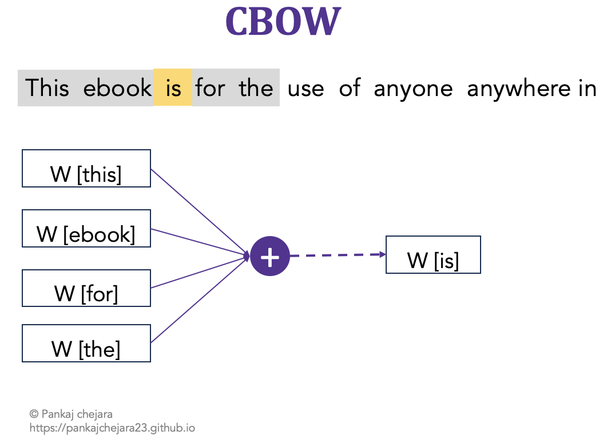
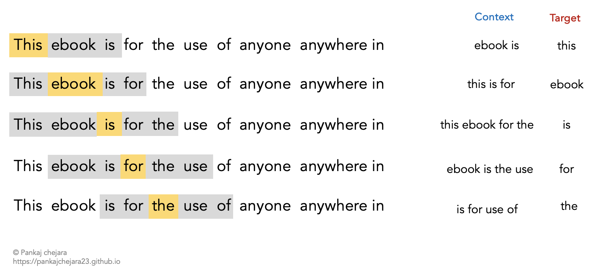

Word embeddings are a dense vector representation of text data (Check this blog post for the basics). The vector representation contains syntactic as well as semantic information of the text. Thus, word embeddings enable an efficient modeling of a variety of language tasks, e.g., language modeling, langauge understanding.
This blog post explains the procedure of how to learn word embeddings from scratch using text data. In particular,we will explore a supervised way of learning word embeddings i.e., Continuous Bag of Words (CBOW).
Continuous Bag of Words (CBOW)
CBOW is an approach to learning word embeddings. In CBOW, we formulate the task of learning word embeddings as a classification task. We aim to predict a word given its surrounding words (also referred to as context) in a pre-defined size of window. Here, window size means how many number of words to consider in context, e.g., 2.
The figure Figure 1 gives an overview of CBOW. For the given text, the words surrounding is are used to predict the word is. This prediction is done using word embeddings of words. In the figure W represents the word embedding for the corresponding words.
In simple terms, the raw text is transformed into data instances where word embeddings of surrounding words are used to predict the word embedding of the target word (e.g., is in the above example).

Figure 1: CBOW
We will see in the following sections a complete process of learning word embeddings from raw text. For our example, we will use free text available through Project Gutenberg. There are thousands of books available. For our task, we will use ‘Hitchhikers guide to Internet’ which is available at this link. You can select any other book’s text for your practice.
The book content is in raw form which we need to preprocess and transform into a format that can be utilized for learning word embeddings.
For that, we will first read the book content and break it into a list of sentences. To do that we will use the punkt sentence tokenizer from the NLTK library.
Important
The dataset chosen is very small from the NLP perspective where text corpora usually contain millions of words. This is just for the sake of learning and keeping things simple.
import nltk.dataimport stringimport re# reading book textbook =open('pg39.txt')book_content = book.read()# breaking the text into sentencessent_tokenizer = nltk.data.load('tokenizers/punkt/english.pickle')sentences = sent_tokenizer.tokenize(book_content.strip())print('Number of sentences:',len(sentences))
Number of sentences: 519
For pre-processing of the text, we simply removed punctuation marks from the text using re package in python. The code below remove punctuation marks, and numbers. Then, the code breaks each sentence into a list of tokens.
# converting sentences into lower casel_sentences =[sent.lower() for sent in sentences]processed = []# we will add spaces if there are punctuation in the text (for splitting purposes)for sent in l_sentences: text = re.sub(r"([?!,])",r" \1 ",sent) text = re.sub(r"[^a-zA-Z.]",r" ",sent) processed.append(text)final = []for sentence in processed:# tokenize the sentences tokens = nltk.tokenize.word_tokenize(sentence)# removing punctuation processed_tokens = [token for token in tokens if token notinset(string.punctuation)] final.append(processed_tokens)print('Samples:',final[1])
The next step is to prepare the processed text for the CBOW classification task. The task would require input data (context) and output data (word to predict). The figure Figure 2 shows the process to prepare the text data for CBOW classification task with a window size 2.

Figure 2: CBOW data preparation
The code below achieves the same functinality. It scans over the tokens of a sentence and returns data for building a classifier.
[('this', 'ebook is'), ('ebook', 'this is for'), ('is', 'this ebook for the'), ('for', 'ebook is the use'), ('the', 'is for use of')]
Now we will process all the sentences and prepare a Pandas DataFrame.
import pandas as pdx = []y = []for sent in final: instances = get_cbow_instances(sent)for pair in instances: x.append(pair[1]) y.append(pair[0])df = pd.DataFrame({'x':x,'y':y})df.to_csv('book.csv',index=False)
Preparing dataset for PyTorch
We will now vectorize our input data to use for learning embeddings using PyTorch. In a previous post, we delved deeper into the vectorization process using vocabulary and vectorizer. You can check that post to gain a deeper understanding of the process.
We will briefly explain that process here.
First, we will build a vocabulary that mainly offers mapping between all the unique words in the corpus and their indices.
Second, we transform our text input into vectors of the size of the vocabulary.
Third, we will use PyTorch Dataset and DataLoader classes to finalize our dataset for training
For the first step, we will reuse our Vocabulary class from a previous post. The source code is given below. For more details on the code please refer to the post.
The vocabulary mainly provides a mapping between tokens and indices.
class CBOWVocabulary(object):def__init__(self, token_to_idx =None, add_unk=True, unk_token='<UNK>'):""" params: token_to_idx (dict): mapping from token to index add_unk (bool): flag to add a special token to the vocabulary for unknowns tokens unk_token (str): Token used as special token """if token_to_idx isNone: token_to_idx ={}self._token_to_idx = token_to_idxself._idx_to_token = {idx:token for token,idx in token_to_idx}self._add_unk = add_unkself._unk_token = unk_tokenself.unk_index =-1if add_unk:self.unk_index =self.add_token(unk_token)def add_token(self,token):""" Add token to the vocabulary params: token (str): token to add to the vocabulary returns: idx (int): index of token """if token inself._token_to_idx:returnself._token_to_idx[token]else: idx =len(self)self._token_to_idx[token] = idxself._idx_to_token[idx] = tokenreturn idxdef lookup_idx(self,idx):""" Lookup vocabulary to fetch token at idx params: idx(int) : index of token to be fetched returns: token (str): token stored at idx """if idx notinself._idx_to_token:raiseKeyError("Vocabulary does not have token with specified index:"%idx)returnself._idx_to_token[idx]def lookup_token(self,token):""" Lookup vocabulary to fetch index of a token params: token(str): token to lookup returns: idx (int): index of token """if token notinself._token_to_idx:returnself.unk_indexelse:returnself._token_to_idx[token]def__len__(self):returnlen(self._idx_to_token)def__str__(self):return"Vocabulary (size = %d)"%len(self)
We will now populate our vocabulary with the text data from the book. The following code adds all tokens to the vocabulary. One thing to note here is that we are adding every token but in practice, you may find discarding some of them with very low frequency count.
# Build CBOWVocabularyvocab = CBOWVocabulary()# Populate vocabularyfor sent in final:for tok in sent: vocab.add_token(tok)# printing sizeprint(len(vocab))
1898
Now, we will prepare our Vectorizer. The vectorizer will transform our input text data into a vector containing indices of tokens in the Vocabulary.
For example, in our vocabulary, the indices of the words project and gutenberg are 2, 3 respectively. That means when we apply the vectorizer, it will return a vector containing 0 and 1.
We know that the window size chosen was 2. That means the maximum number of items in the vector representing context can be 4 (2 on the left side and 2 on the right side). We also know that context can also be made of two words, e.g., context project gutenberg for the word the. To keep the size of the vector consistent, we add padding to our vector for cases when the context data has less than four words.
The following code achieves that functionality. It returns a vector of size 4 for specified context data.
import numpy as npdef vectorizer(context,window_size=2):""" This function transforms the context text into a vector of integer representing indices of words in the text. Argument: --------- context: str a string containing context words window_size: int window size to determine the size of the returned vector and add padding Returns: np.array an array of indices of words in context """# in the context there can be max of double of window size, e.g., 2 words in left size, 2 in right side max_context_size =2* window_size vector = np.zeros(max_context_size)for ind, word inenumerate(context.split(" ")): vector[ind] = vocab.lookup_token(word)return vectorvectorizer('project gutenberg')
array([2., 3., 0., 0.])
Let’s now move to the final step of preparing the dataset for training our classifier. We will now use PyTorch’s Dataset and DataLoader classes to simplify the process of generating batches for training in the format needed.
The Dataset and DataLoader classes take care of transforming arrays into tensors, and preparation of batches.
We create a new class CBOWDataset which implements two functions __getitem__ and __len__.
The first function returns the vectorized context data and the index of the word to predict. The second function returns the number of total instances in the dataset.
from torch.utils.data import Dataset, DataLoaderclass CBOWDataset(Dataset):def__init__(self,df):""" Argument: -------- df: Pandas DataFrame dataframe containing context and word to predict """self.df = dfdef__getitem__(self,index):""" Returns vectorized context data and the index of the word to predict """ record =self.df.iloc[index,:].to_dict()return {'input_x':vectorizer(record['x']),'y':vocab.lookup_token(record['y'])}def__len__(self):""" Returns the size of dataset """returnself.df.shape[0]
Building model using PyTorch
We will now build our model architecture using PyTorch. PyTorch offers an Embedding layer which makes it easy to handle word embeddings.
The layer is used to store and retrieve word embeddings using their indices. That’s the reason why in our vectorized form we only have indices of tokens.
We will use an Embedding layer at the start of our model which will fetch the corresponding word embeddings of input indices and pass them to the next layer.
To create an Embedding layer, we need to specify num_embeddings which is the size of the vocabulary (e.g., the total number of tokens in the vocabulary), embeddings_dim which is the number of dimensions (i.e., how many dimensions to use to represent a word embedding, e.g., 100, 200).
During our vectorization process, we also added padding (i.e., 0) to the vector when the size was less than four. To tell the model that this 0 should not have any effect during training (or in other words model must not update these values during training), we can specify padding_idx as 0.
import torchfrom torch import nnimport torch.nn.functional as Fnum_tokens =len(vocab)embedding_dim =50class CBOWClassifier(nn.Module):""" Classifier for learning word embeddings """def__init__(self,vocab_size,embedding_dim):""" Arguments: vocab_size: int Size of vocabulary embedding_size: int Embedding dimensions """super(CBOWClassifier,self).__init__()self.embedding = nn.Embedding(num_embeddings=vocab_size, embedding_dim=embedding_dim, padding_idx=0)self.fc1 = nn.Linear(in_features=embedding_dim,out_features=vocab_size)def forward(self,input_x,apply_softmax=False):""" Performs the forward pass Arguments: input_x: torch.tensor input tensor of shape (batch_size, input_dim) apply_softmax: bool flag to perform softmax (this is mainly during the prediction when we also want probability) """ intermediate =self.embedding(input_x).sum(dim=1) output =self.fc1(intermediate)if apply_softmax: output = f.soft_max(output, dim=1)return output
Training CBOW Classifier
In practice, the dataset is divided into three parts: training, validation, and testing. The training set is used for learning word embeddings while the validation set is used to evaluate the model. The evaluation allows ML engineers to decide whether there is a need to change the model’s architecture. Once the model achieves reasonable performance, it is finally tested on the test set. It is recommended to follow the same when working on a real-world ML project.
The following training procedure utilizes the entire dataset. This is just for the sake of learning and to keep the post simple to understand. You can check this post to get familiar with the entire procedure here.
import torch.optim as optimnum_epochs =30classifier = CBOWClassifier(num_tokens,100)dataset = CBOWDataset(df)loader = DataLoader(dataset,batch_size=50)adam = optim.Adam(classifier.parameters(),lr=.001)loss_fnc = nn.CrossEntropyLoss()classifier.train()for epoch inrange(num_epochs): running_loss =0.0for batch_index, batch inenumerate(loader):# setting gradients from previous epochs to zero adam.zero_grad()# forward pass output = classifier(batch['input_x'].int())# computing loss loss = loss_fnc(output,batch['y'])# backward pass loss.backward()#update parameters adam.step() running_loss += (loss.item() - running_loss)/(batch_index+1)print('Epoch:',epoch,' Loss:',running_loss)
Now, we will use our trained embeddings to find words that are close to a specified word. To do this task we will follow the following steps
Get the weights of an embedding layer of the classifier (which are the word embeddings)
Obtain the index of the word for which we want to search close words
Obtain the word embeddings of the word using its index
Iterate over all the words in the vocabulary, obtaining their indices, fetching their word embeddings, and then computing the distance
Get n words with the highest distance measures
def get_close_words(word_to_search, word_to_index,embeddings,n=10):""" Get n closes words to the specified word Arguments: ---------- word_to_search: str word which we want to search word_to_index: dictionary mapping from word to index in vocabulary n: int number of words to return Returns: ------- list: a list of n words which are closest to the specified word. """ word_embedding = embeddings[word_to_index[word_to_search]] distances = []for word, index in word_to_index.items():if word =='<UNK>'or word == word_to_search:continue distances.append((word, torch.dist(word_embedding, embeddings[index]).item())) sort_distances =sorted(distances, key=lambda x: x[1])return sort_distances[1:n+2]
embeddings = classifier.embedding.weight.dataclose_words = get_close_words('network',vocab._token_to_idx,embeddings,n=5)for c in close_words:print('[{:.2f}] -- {}'.format(c[1],c[0]))